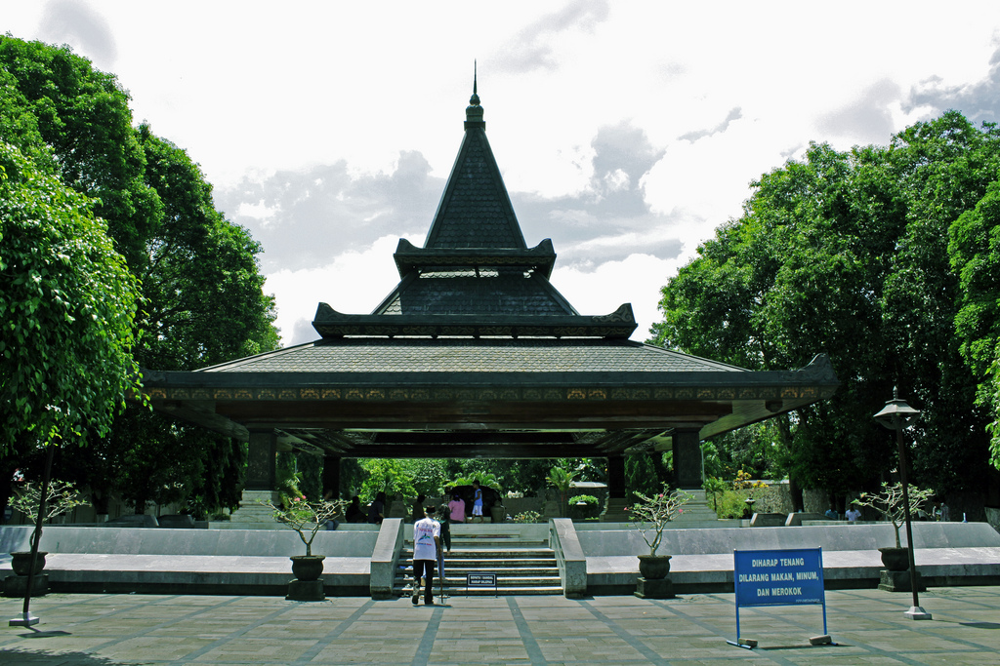
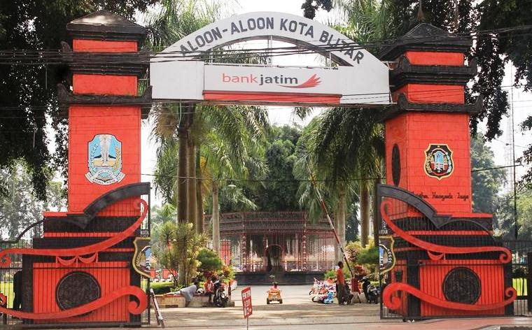

Wisata Makam Bung Karno

Makam Ir. Soekarno ialah pemakaman kompleks presiden pertama Republik Indonesia, Soekarno,
yang telah didesain arsitektur khas Jawa, yaitu bangunan joglo.
Pada tahun 2004, ditambahkan bangunan baru salah satu kompleks makam Bung Karno yaitu Perpustakaan
dan Museum Bung Karno. Tim Ketua Arsitek adalah Pribadi Widodo dan Baskoro Tedjo dari Institut
Teknologi Bandung (ITB). Terdapat sebuah lukisan Ir. Soekarno yang berada di pintu masuk Museum.
Keunikan lukisan tersebut saat kita melihatnya dari samping tampak berdetak seperti jantung manusia
bahkan para wisatawan ingin mengunjungi dan melihatnya langsung saat melihat lukisannya merinding
bahkan seperti horor, di museum terdapat baju yang dikenakan Ir. Soekarno pada zaman dahulu, bahkan
uang zaman dahulu juga ada di museum itu. Karena itu bukan sembarang uang dahulu bapak Ir.Soekarno
menemukan uang itu dan diletakkannya di tangan maka uang itu akan melipat dengan sendirinya. Selain
itu benda benda di museum itu terdapat juga foto foto Bapak Ir. Soekarno saat masih anak anak
sampai ia menjadi Tua Bung Karno dijuluki dengan "1000" wajah, karena itu saat masih kecil sampai
tua
memiliki wajah yang berbeda, selain museum terdapat perpustakaan terlengkap di Blitar. Banyak
wisatawan dan mahasiswa berkunjung bahkan berziarah juga
Sejarah Kota Blitar

Sejarah blitar
Dari legenda dahulu kala bangsa dari Tartar Asia Timur menguasai blitar sebelum namanya bukan
blitar, sampai majapahit ingin mereput daerah itu, sampai Kerajaan Adidaya namanya kemudian untuk
mengutus Nilasuwarna untuk mundur dari bangsa Tartar.
Lalu keberuntungan berpihak ke Nilasuwarna, dapat mengusir bangsa yang dari Mongolia itu, jasanya
dianugerahi sebagai Adipati Aryo Blitar 1 dan memimpin daerah yang yang telah direbutnya itu.
berhasil memakan tanah, membebaskan dengan nama Balitar
yang artinya kembali pulang Bangsa Tartar.
Dari perkembangannya terjadi konflik Aryo Blitar I dengan Ki Senguruh Kinareja tak lain itu adalah
patihnya sendiri. konfliknya terjadi karena Sengguruh ingin sekali menikahi Dewi Rayung Wulan, itu
adalah istri Aryo Blitar I. Ceritanya Aryo Blitar I lengser dari tahtanya dan juga Sengguruh meraih
tahta dengan gelar adipati Aryo Blitar II.
tetapi, pemberontakan terjadi lagi, Aryo Blitar II akhirnya dipaksa turun pangkat oleh Joko Kandung,
Putra dari Aryo Blitar I. Joko Kandung telah dihentikan dari kepemimpinan oleh bangsa Belanda . Jadi
rakyat Blitar telah multietnis saat itu dan melakukan perlawanan dan bangsa belanda telah meredamkan
rakyat Blitar. Status Blitar adalah gemeente(kotapraja) pada saat itu tanggal 1 April 1906.
Peraturan Staatsblad Van Nederlandsche Indie No. 150/1906. Saat tahun itu dibentuklah
beberapa kota
di Pulau Jawa Semarang, Salatiga, Madioen, Soerabaja, Batavia, Buitenzorg, Bandoeng, Cheribon, Kota
Magelang dan Pasoeroean.
Dengan status sebagai gemeente, blitar dibentuk Dewan Kotapradja Blitar yang beranggota 13
Orang dan
mendapatkan subsidi 11.850 gulden dari Pemerintah Hindia Belanda. sementara jabatan walikota
burgemeester dirangkap oleh Residen Kediri.
Saat zaman Jepang , yang berdasar Osamu Seirei tahun 1942, kota Blitar ini disebut sebagai
Blitar-shi luas wilayahnya 16,1 km2 dan pemimpinnya adalah seorang shi-chō.
berikutnya, Dalam ketentuan UU No.17/1950, Kota Blitar menerapkan penetapan daerah kota kecil dengan
sebagian luas wilayah 16,1 km2 . dalam perkembangannya lagi kota ini berubah lagi menjadi
Kotamadya
Blitar yang berdasarkan UU No. 18/1965. Peraturan Pemerintah No. 48/1982, luas Kotamadya bertambah
menjadi 32,58 km2 lalu dikembangkkan 3 Kecamatan denggan 20 Kelurahan. UU No. 22/1999,
Kotamadya
Blitar namanya berubah menjadi Kota Blitar sekarang